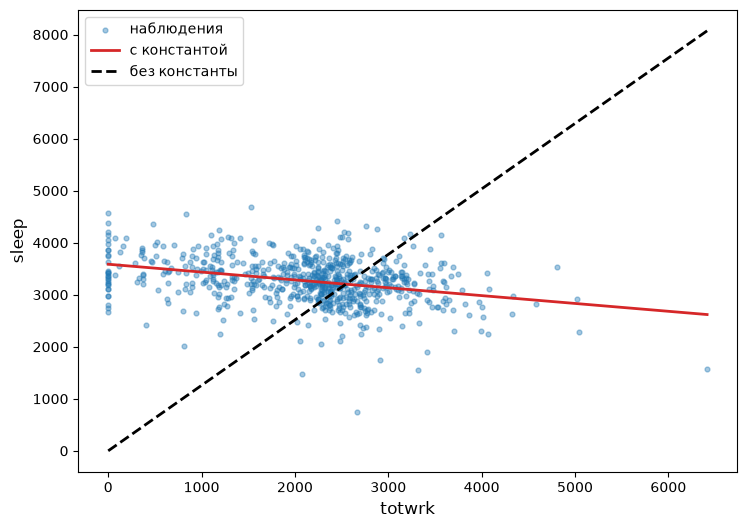
Задачи по Эконометрике-1: Метод наименьших квадратов
1 Теория
1.1 Задача (прямая с константой)
Пусть задано \(n\) наблюдений (точек на плоскости) \(\lbrace x_i,y_i\rbrace_{i=1}^n\). Линейная функция \(y=\beta_0+\beta_1x\) «подгоняется» под наблюдения методом наименьших квадратов (OLS):
- выведите систему уравнений для нахождения параметров оптимальной (подогнанной) прямой, наименее уклоняющейся от заданных наблюдений;
- выведите формулы для оценок \(\widehat{\beta}_0\) и \(\widehat{\beta}_1\) коэффициентов оптимальной прямой;
- покажите, что для оценок коэффициентов верно:
\[ \begin{aligned} \widehat{\beta}_1&=\frac{\mathrm{s.cov}(x,y)}{\mathrm{s.Var}(x)}, & \widehat{\beta}_0&=\bar{y}-\widehat{\beta}_1\cdot \bar{x}. \end{aligned} \]
Здесь \(\mathrm{s.cov}(x,y)\) — выборочная ковариация, \(\mathrm{s.Var}(x)\) — выборочная дисперсия.
1.2 Задача (прямая без константы)
Пусть задано \(n\) наблюдений (точек на плоскости) \(\lbrace x_i,y_i\rbrace_{i=1}^n\). Линейная функция \(y=\beta x\) подгоняется под наблюдения методом наименьших квадратов (OLS):
- выведите уравнение для нахождения параметра оптимальной прямой, наименее уклоняющейся от заданных наблюдений (точек на плоскости);
- выведите формулу для оценки \(\widehat{\beta}\) коэффициента оптимальной прямой.
1.3 Задача (обратная регрессия без константы)
Пусть \(\widehat{\beta}\) есть OLS-оценка коэффициента наклона линейной функции \(y\) на \(x\) без константы, а \(\widehat{\gamma}\) — OLS-оценка коэффициента наклона линейной функции \(x\) на \(y\) без константы. Верно ли для этих оценок равенство
\[ \widehat{\gamma}=\frac{1}{\widehat{\beta}}? \]
Ответ поясните.
1.4 Задача (обратная регрессия с константой)
Пусть \(\widehat{\beta}_1\) есть OLS-оценка коэффициента наклона линейной функции \(y\) на \(x\) с константой, а \(\widehat{\gamma}_1\) — OLS-оценка коэффициента наклона линейной функции \(x\) на \(y\) с константой. Верно ли равенство
\[ \widehat{\gamma}_1=\frac{1}{\widehat{\beta}_1}? \]
Ответ поясните.
1.5 Задача (квадратичный многочлен)
Пусть задано \(n\) наблюдений (точек на плоскости) \(\lbrace x_i,y_i\rbrace_{i=1}^n\). Парабола \(y=\beta_0+\beta_1x+\beta_2x^2\) подгоняется под наблюдения методом наименьших квадратов (OLS). Выведите систему уравнений для нахождения параметров оптимальной параболы.
2 Практика (Python)
Важное уведомлениеВажно
- Во всех задачах логарифм натуральный; константа включается по умолчанию.
- Данные — в папке
datasets/, описание наборов данных — в файлеdatasets/data-description.md. - Численные ответы округлите до 2-х десятичных знаков; оценки, которые при этом обращаются в ноль, — до трёх значащих цифр.
- В ответах коэффициенты подписаны так, как их выводит statsmodels:
Intercept— константа,np.log(x)— \(\log x\),I(x ** 2)— \(x^2\).
2.1 sleep equation #1
Для набора данных sleep75 (sleep, totwrk — минуты в неделю, age — годы) рассмотрим регрессию sleep на totwrk.
Постройте диаграмму рассеяния sleep vs totwrk с подогнанной прямой.
Ответ: Рисунок 1; на нём показаны обе прямые — с константой и без константы.
С константой
Найдите параметры оптимальной прямой sleep на totwrk. Ответ округлите до 2-х десятичных знаков.
Ответ:
| Переменная | Оценка |
|---|---|
| Intercept | 3586.38 |
| totwrk | -0.15 |
Модель была подогнана по 706 наблюдениям.
Без константы
Найдите параметры оптимальной прямой sleep на totwrk без константы. Ответ округлите до 2-х десятичных знаков.
Ответ:
| Переменная | Оценка |
|---|---|
| totwrk | 1.26 |
Модель была подогнана по 706 наблюдениям.
2.2 sleep equation #2
Для набора данных sleep75 рассмотрим регрессию sleep на age.
Постройте диаграмму рассеяния sleep vs age с подогнанной прямой.
Ответ: Рисунок 2; на нём показаны обе прямые — с константой и без константы.
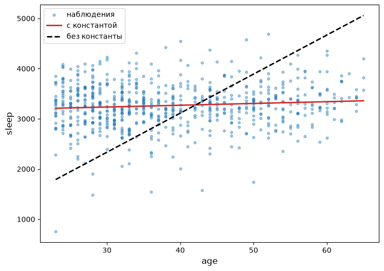
С константой
Найдите параметры оптимальной прямой sleep на age. Ответ округлите до 2-х десятичных знаков.
Ответ:
| Переменная | Оценка |
|---|---|
| Intercept | 3128.91 |
| age | 3.54 |
Модель была подогнана по 706 наблюдениям.
Без константы
Найдите параметры оптимальной прямой sleep на age без константы. Ответ округлите до 2-х десятичных знаков.
Ответ:
| Переменная | Оценка |
|---|---|
| age | 77.82 |
Модель была подогнана по 706 наблюдениям.
2.3 sleep equation #3
Для набора данных sleep75 рассмотрим регрессию sleep на totwrk, I(totwrk**2).
Постройте диаграмму рассеяния sleep vs totwrk с подогнанной параболой.
Ответ: Рисунок 3.
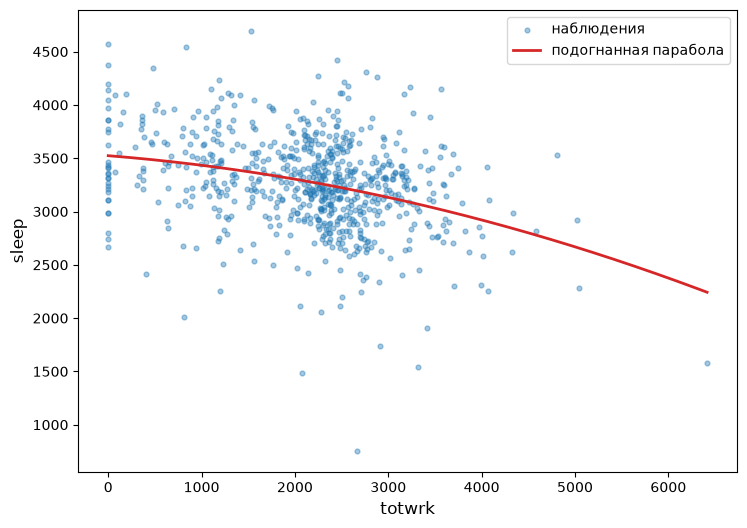
Найдите параметры оптимальной параболы sleep на totwrk, I(totwrk**2). Ответ округлите до 2-х десятичных знаков.
Ответ:
| Переменная | Оценка |
|---|---|
| Intercept | 3523.59 |
| totwrk | -0.07 |
| I(totwrk ** 2) | -2.03e-05 |
Модель была подогнана по 706 наблюдениям.
2.4 sleep equation #4
Для набора данных sleep75 рассмотрим регрессию sleep на age, I(age**2).
Постройте диаграмму рассеяния sleep vs age с подогнанной параболой.
Ответ: Рисунок 4.
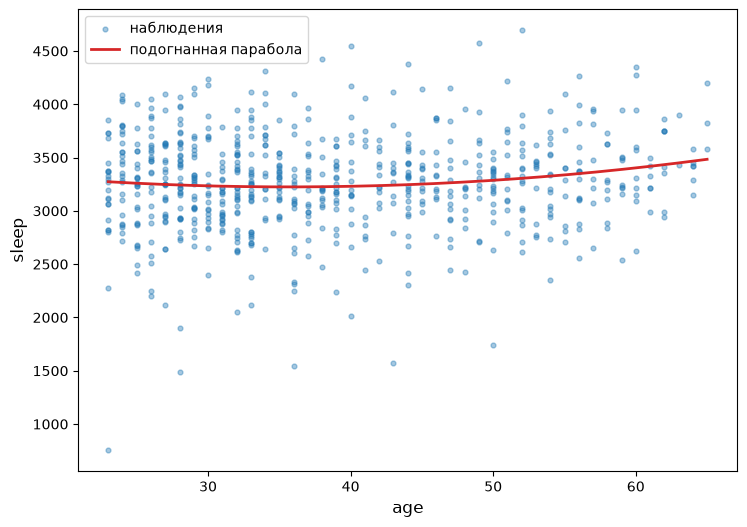
Найдите параметры оптимальной параболы sleep на age, I(age**2). Ответ округлите до 2-х десятичных знаков.
Ответ:
| Переменная | Оценка |
|---|---|
| Intercept | 3608.03 |
| age | -21.49 |
| I(age ** 2) | 0.30 |
Модель была подогнана по 706 наблюдениям.
2.5 sleep equation #5
Для набора данных sleep75 рассмотрим регрессию sleep на totwrk, age.
Найдите параметры оптимальной плоскости sleep на totwrk, age. Ответ округлите до 2-х десятичных знаков.
Ответ:
| Переменная | Оценка |
|---|---|
| Intercept | 3469.20 |
| totwrk | -0.15 |
| age | 2.92 |
Модель была подогнана по 706 наблюдениям.
2.6 output equation #1
Для набора данных Labour (output, capital — млн евро, labour — число работников) рассмотрим регрессии output на capital и np.log(output) на np.log(capital).
Гистограммы
Постройте гистограммы переменных output, np.log(output), capital, np.log(capital), labour, np.log(labour).
Ответ: Рисунок 5.
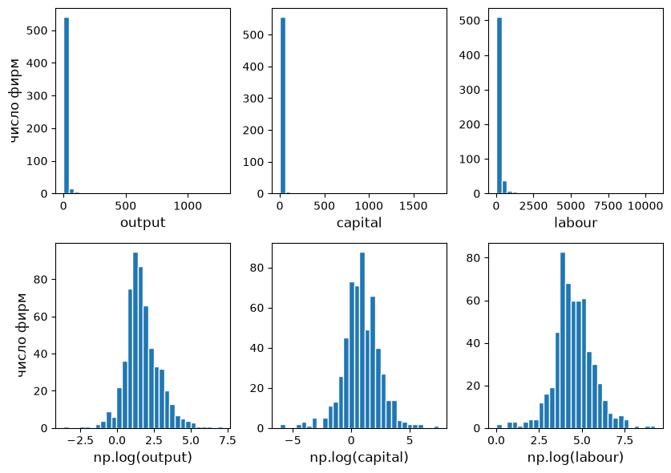
Диаграмма рассеяния
Постройте диаграмму рассеяния output vs capital с подогнанной прямой.
Ответ: Рисунок 6; на нём показаны обе прямые — с константой и без константы.
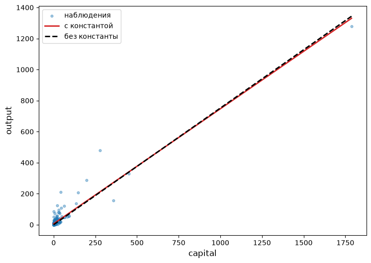
С константой
Найдите параметры оптимальной прямой output на capital. Ответ округлите до 2-х десятичных знаков.
Ответ:
| Переменная | Оценка |
|---|---|
| Intercept | 6.19 |
| capital | 0.74 |
Модель была подогнана по 569 наблюдениям.
Без константы
Найдите параметры оптимальной прямой output на capital без константы. Ответ округлите до 2-х десятичных знаков.
Ответ:
| Переменная | Оценка |
|---|---|
| capital | 0.75 |
Модель была подогнана по 569 наблюдениям.
Диаграмма рассеяния в логарифмах
Постройте диаграмму рассеяния np.log(output) vs np.log(capital) с подогнанной прямой.
Ответ: Рисунок 7; на нём показаны обе прямые — с константой и без константы.
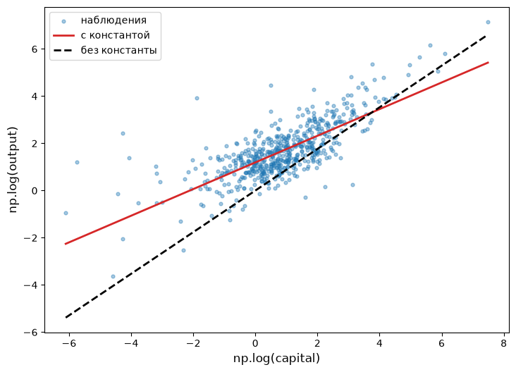
В логарифмах, с константой
Найдите параметры оптимальной прямой np.log(output) на np.log(capital). Ответ округлите до 2-х десятичных знаков.
Ответ:
| Переменная | Оценка |
|---|---|
| Intercept | 1.19 |
| np.log(capital) | 0.56 |
Модель была подогнана по 569 наблюдениям.
В логарифмах, без константы
Найдите параметры оптимальной прямой np.log(output) на np.log(capital) без константы. Ответ округлите до 2-х десятичных знаков.
Ответ:
| Переменная | Оценка |
|---|---|
| np.log(capital) | 0.88 |
Модель была подогнана по 569 наблюдениям.
2.7 output equation #2
Для набора данных Labour рассмотрим регрессии output на labour и np.log(output) на np.log(labour).
Диаграмма рассеяния
Постройте диаграмму рассеяния output vs labour с подогнанной прямой.
Ответ: Рисунок 8; на нём показаны обе прямые — с константой и без константы.
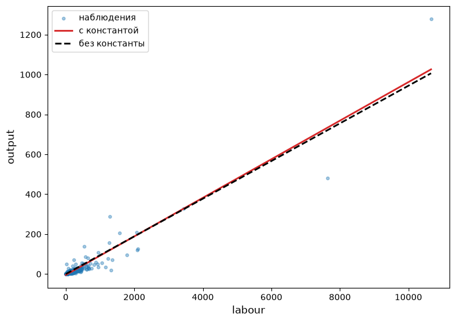
С константой
Найдите параметры оптимальной прямой output на labour. Ответ округлите до 2-х десятичных знаков.
Ответ:
| Переменная | Оценка |
|---|---|
| Intercept | -4.72 |
| labour | 0.10 |
Модель была подогнана по 569 наблюдениям.
Без константы
Найдите параметры оптимальной прямой output на labour без константы. Ответ округлите до 2-х десятичных знаков.
Ответ:
| Переменная | Оценка |
|---|---|
| labour | 0.09 |
Модель была подогнана по 569 наблюдениям.
Диаграмма рассеяния в логарифмах
Постройте диаграмму рассеяния np.log(output) vs np.log(labour) с подогнанной прямой.
Ответ: Рисунок 9; на нём показаны обе прямые — с константой и без константы.
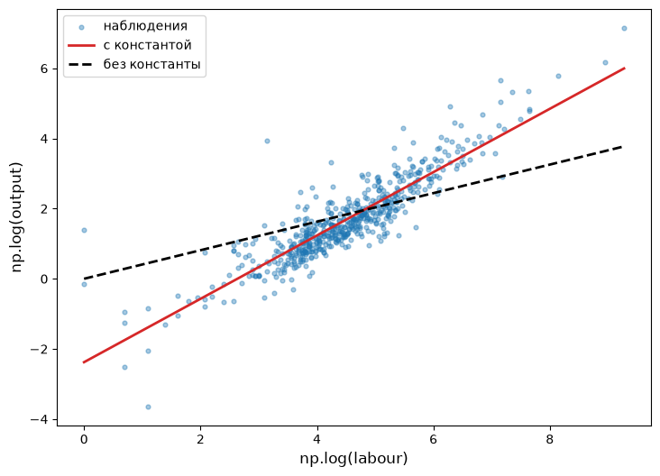
В логарифмах, с константой
Найдите параметры оптимальной прямой np.log(output) на np.log(labour). Ответ округлите до 2-х десятичных знаков.
Ответ:
| Переменная | Оценка |
|---|---|
| Intercept | -2.38 |
| np.log(labour) | 0.90 |
Модель была подогнана по 569 наблюдениям.
В логарифмах, без константы
Найдите параметры оптимальной прямой np.log(output) на np.log(labour) без константы. Ответ округлите до 2-х десятичных знаков.
Ответ:
| Переменная | Оценка |
|---|---|
| np.log(labour) | 0.41 |
Модель была подогнана по 569 наблюдениям.
2.8 output equation #3
Для набора данных Labour рассмотрим регрессию np.log(output) на np.log(capital), I(np.log(capital)**2).
Постройте диаграмму рассеяния np.log(output) vs np.log(capital) с подогнанной параболой.
Ответ: Рисунок 10.
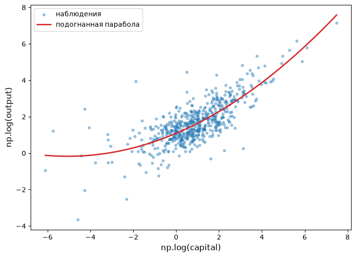
Найдите параметры оптимальной параболы np.log(output) на np.log(capital), I(np.log(capital)**2). Ответ округлите до 2-х десятичных знаков.
Ответ:
| Переменная | Оценка |
|---|---|
| Intercept | 1.09 |
| np.log(capital) | 0.50 |
| I(np.log(capital) ** 2) | 0.05 |
Модель была подогнана по 569 наблюдениям.
2.9 output equation #4
Для набора данных Labour рассмотрим регрессию np.log(output) на np.log(labour), I(np.log(labour)**2).
Постройте диаграмму рассеяния np.log(output) vs np.log(labour) с подогнанной параболой.
Ответ: Рисунок 11.
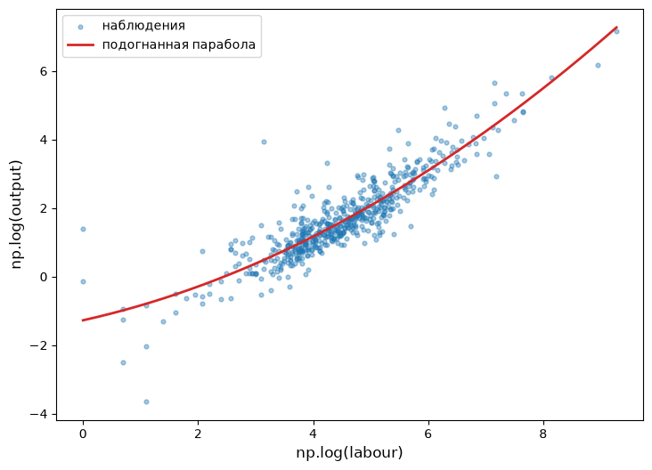
Найдите параметры оптимальной параболы np.log(output) на np.log(labour), I(np.log(labour)**2). Ответ округлите до 2-х десятичных знаков.
Ответ:
| Переменная | Оценка |
|---|---|
| Intercept | -1.28 |
| np.log(labour) | 0.37 |
| I(np.log(labour) ** 2) | 0.06 |
Модель была подогнана по 569 наблюдениям.